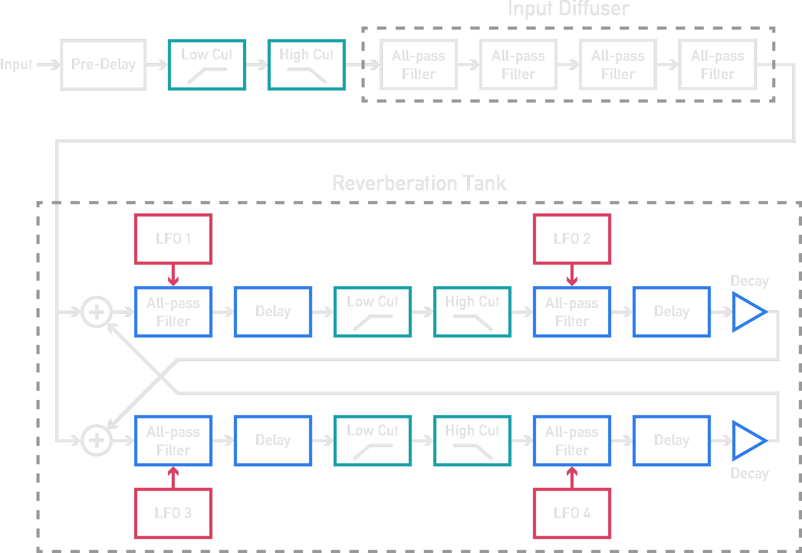

Contents
- Description
- User Guide
- How it works
Plateau is a plate reverb module designed to make a dry, lifeless patch sound lush, deep and spacious. However, Plateau attempts to go beyond what most other reverberators offer.
Plateau is based upon the popular Dattorro (1997) digital plate reverb design. The diagram below shows a simplified version of the algorithm.
